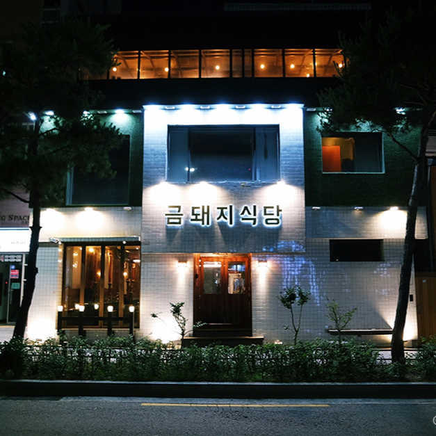
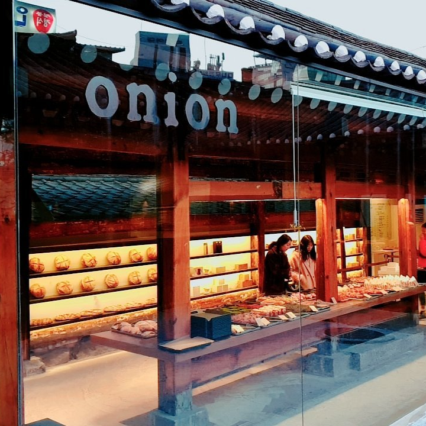
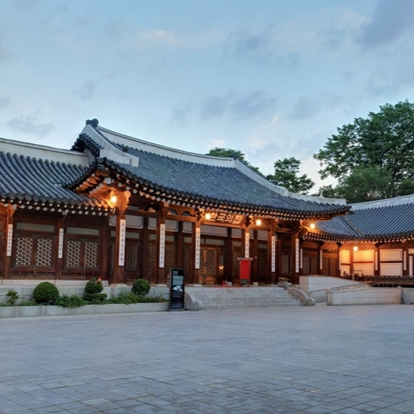

WHY SEOUL?
Seoul, the city where ancient palaces meet the neon future.
Traveling to Seoul offers an enchanting blend of ancient history and cutting-edge futurism, making it one of Asia's most dynamic capital cities. Visitors are drawn to the seamless contrast between majestic Joseon Dynasty sites like Gyeongbokgung Palace and ultramodern architectural marvels like the Dongdaemun Design Plaza.
Beyond its striking skyline, the city is a global culinary epicenter where you can experience world-class Korean BBQ and bustling street food markets, alongside a massive, creative café culture. It is incredibly safe, clean, and easy to navigate via its top-tier public transit system, while also offering instant escapes into nature with scenic mountain hikes like Bukhansan National Park located right within the city limits
Restaurants
Must-visit spots in Seoul

Geumdwaeji Sikdang
Energetic and bustling across three distinct floors, featuring cast-iron grills and high-quality charcoal. Expect a wait, as they do not take reservations for small groups.
Address:
149 Dasan-ro, Jung District, Seoul
Why it's a must-visit
This is arguably the most famous Korean BBQ spot in the country, boasting multiple Michelin Bib Gourmand accolades and famously known as the favorite hangout spot for K-pop icons like BTS's Jimin and Jungkook.

Cafe Onion Anguk
Calm yet popular, with a grand outdoor courtyard. You can choose to sit on traditional floor mats or regular modern seating.
Address:
5 Gyedong-gil, Jongno-gu, Seoul
Why it's a must-visit
Located in a beautifully restored century-old traditional Hanok (Korean house), this cafe flawlessly blends historic wooden architecture with a sleek, minimalist modern aesthetic. It is widely considered one of the most aesthetic and Instagrammed spots in Seoul.

Korea House(한국의집)
Elegant, culturally immersive, and highly professional. They occasionally pair meals with live classical Korean performance arts and music.
Address:
10 Toegye-ro 36-gil, Jung District, Seoul
Why it's a must-visit
Go for one of their seasonal royal full-course banquet menus, which feature small, beautifully arranged plates of high-grade beef, traditional seasonal seafood, and complex side dishes (banchan) made using historic royal recipes.